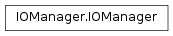

The WaveBlocks Project
@author: R. Bourquin @copyright: Copyright (C) 2010, 2011, 2012 R. Bourquin @license: Modified BSD License

An IOManager class that can save various simulation results into data files. The output files can be processed further for producing e.g. plots.
Create a data block with the specified block ID. Each data block can store several chunks of information, and there can be an arbitrary number of data blocks per file.
| Parameters: | blockid – The ID for the new data block. If not given the blockid will be choosen automatically. The block ID has to be unique. |
|---|---|
| Returns: | The block ID of the created block. |
Set up a new IOManager instance. The output files are created and opened.
| Parameters: |
|
|---|
Create a data group with the specified group ID. Each data group can contain an arbitrary number of data blocks, and there can be an arbitrary number of data groups per file.
| Parameters: | groupid – The ID for the new data group. If not given the group ID will be choosen automatically. The group ID has to be unique. |
|---|---|
| Returns: | The group ID of the created group. |
Close the open output file and reset the internal information.
Lookup the index for a given timestep.
Note
Assumes the timegrid array is strictly monotone.
Return a list containing the IDs for all blocks in the current file structure.
| Parameters: |
|
|---|
Return a list containing the IDs for all groups in the current file structure.
| Parameters: | exclude – A list of group IDs to exclude. Per default no group is excluded. |
|---|
Return the ID of the group a given block belongs to or None if there is no such data block.
| Parameters: | blockid – The ID of the given block. |
|---|
Return the number of data blocks in the current file structure.
| Parameters: | groupid – An optional group ID, if given we count only data blocks which are a member of this group. If it is None we count all data blocks. |
|---|
Return the number of block groups in the current file structure.
Check if we must resize a given dataset and if yes, resize it.
Load a given file that contains the results from a former simulation.
| Parameters: | filename – The filename (optionally with filepath) of the file we try to load. If not given the default value from GlobalDefaults is used. |
|---|
Split a multi-dimensional data block into slabs along a given axis.
| Parameters: |
|
|---|---|
| Returns: | A list of slices. |